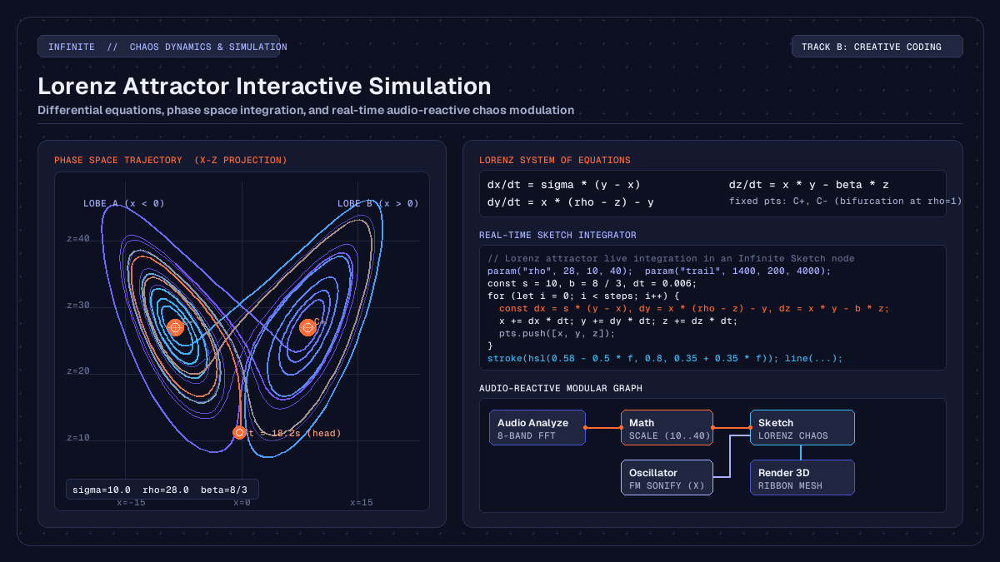

Creative
Lorenz attractor interactive simulation in creative coding
How to build a Lorenz attractor interactive simulation in real time using differential equations, interactive Sketch code, and audio modulation.

on this page
A Lorenz attractor interactive simulation brings the non-linear elegance of deterministic chaos into modern creative coding and live audiovisual performance. In traditional generative art, procedural movement often relies on periodic functions like sine waves or pseudorandom noise fields. While periodic functions offer predictable repetition and noise fields produce uncorrelated drifting, neither captures the natural tension of complex physical systems: structured form that evolves continuously without ever repeating.
In modular workstations like Infinite, the Lorenz attractor bridges mathematics, real-time computer graphics, and modular sound design. By evaluating its three coupled differential equations inside a programmable canvas, artists can project intricate three-dimensional phase space paths, modulate attractor dynamics live with audio frequencies, and sonify chaotic coordinates into synthesiser parameters.
Here is how the underlying non-linear mathematics work, how to implement the simulation inside a Sketch node, and how to patch chaotic variables across visual and audio nodes on a single canvas.

The geometry of deterministic chaos
The Lorenz system was introduced in 1963 by mathematician and meteorologist Edward Lorenz. While studying a simplified twelve-variable mathematical model of atmospheric convection, Lorenz reduced the convective fluid flow between warm lower and cool upper boundaries to a minimal system of three autonomous ordinary differential equations:
dx / dt = sigma * (y - x)
dy / dt = x * (rho - z) - y
dz / dt = x * y - beta * zHere, the state variables describe idealized physical properties:
xis proportional to the rate of convective fluid circulation.yis proportional to the horizontal temperature variation between ascending and descending currents.zmeasures the distortion of the vertical temperature profile from pure linearity.
The three system parameters govern the physical regime:
sigma(the Prandtl number) represents the ratio of kinematic viscosity to thermal diffusivity. In standard simulations, this is fixed at10.0.betarepresents the geometric aspect ratio of the convective roll cells, traditionally set to8.0 / 3.0(approximately2.667).rho(the Rayleigh number) measures the normalized temperature difference driving the fluid convection. It serves as the primary bifurcation parameter.
When rho is less than 1.0, the system has only one stable equilibrium at the coordinate origin (0, 0, 0), representing pure conduction where fluid motion dissipates. As rho exceeds 1.0, two symmetric convective fixed points emerge, labelled C+ and C-:
C+, C- = (+-sqrt(beta * (rho - 1)), +-sqrt(beta * (rho - 1)), rho - 1)At the canonical threshold rho = 28.0, both equilibrium points become unstable spirals. Instead of settling into a fixed point or a simple limit cycle, the trajectory enters bounded deterministic chaos. The path orbits one fixed point, spirals outward as its radius expands, and then crosses the saddle point at the origin to loop around the opposing lobe. Because the trajectory never intersects itself in three-dimensional phase space, it traces a fractal structure with a Hausdorff dimension of approximately 2.06.
Numerical integration and step resolution
To compute the attractor trajectory in a real-time computer graphics pipeline, we discretise the continuous derivatives over a small forward time step dt.
In offline scientific research, higher-order integrators such as the fourth-order Runge-Kutta (RK4) method are preferred because they minimise local truncation error. However, in real-time creative coding and interactive visual performance, the forward Euler integration scheme provides an ideal balance of speed, simplicity, and visual stability:
x_next = x + sigma * (y - x) * dt
y_next = y + (x * (rho - z) - y) * dt
z_next = z + (x * y - beta * z) * dtThe key to visual clarity is selecting an appropriate time step. If dt is set too high (for example, greater than 0.02), numerical instability causes coordinates to expand rapidly towards infinity. If dt is set too low (less than 0.001), the trajectory moves sluggishly, requiring tens of thousands of iterations per frame to reveal the dual-lobe geometry.
A time step between 0.005 and 0.008 produces stable integration. In interactive environments running at 60 or 120 frames per second, computing between 600 and 1,800 steps per frame generates a continuous glowing ribbon that showcases both the fast orbital motion around each lobe and the broader global butterfly structure.
Real-time simulation in a Sketch node
In Infinite, you can write JavaScript creative coding routines directly inside a Sketch node. The node exposes a lightweight drawing API with vector mathematics, colour utilities, and parameter reflection on the node body.
The official Lorenz Attractor Sketch available in the Infinite Library implements this simulation with live interactive parameter controls:
// Lorenz Attractor - Infinite Library (Sketch)
// Differential equations: dx=s(y-x), dy=x(r-z)-y, dz=xy-bz
param("rho", 28, 10, 40);
param("trail", 1400, 200, 4000);
param("zoom", 1, 0.5, 2);
function draw(t) {
background(0.04, 0.04, 0.08);
const s = 10, b = 8 / 3, dt = 0.006;
let x = 0.1, y = 0, z = 0;
const steps = floor(t * 120) + 400;
const pts = [];
for (let i = 0; i < steps; i++) {
const dx = s * (y - x), dy = x * (rho - z) - y, dz = x * y - b * z;
x += dx * dt; y += dy * dt; z += dz * dt;
pts.push([x, y, z]);
}
const from = max(0, pts.length - trail);
const k = min(width, height) / 60 * zoom;
noFill();
strokeWeight(2.2);
for (let i = from + 1; i < pts.length; i++) {
const a = pts[i - 1], p = pts[i];
const f = (i - from) / (pts.length - from);
stroke(hsl(0.58 - 0.5 * f, 0.8, 0.35 + 0.35 * f));
line(width / 2 + a[0] * k, height * 0.9 - a[2] * k, width / 2 + p[0] * k, height * 0.9 - p[2] * k);
}
}The script declares three interactive controls using param():
rho: Controls the Rayleigh bifurcation value, ranging from10.0to40.0. Modulating this changes the size of the lobes and the switching frequency between attractor wings.trail: Determines how many historical trajectory vertices are retained in the drawing buffer, shaping the visible tail length.zoom: Adjusts the projection scale so the attractor fits comfortably inside different viewport resolutions.
Each frame, the script advances the numerical integration from the initial perturbation coordinate (0.1, 0.0, 0.0). As the trail vertices accumulate, the script calculates a normalised depth ratio f for each line segment and applies an HSL colour ramp. Older segments fade into deep indigo and purple tones, while the leading head glows with bright cyan and orange strokes.
Audio-reactive modulation of system parameters
Because parameters declared with param() in a Sketch node are automatically registered with the application modulation system, you can connect audio analysis outputs directly into the chaotic equations.
To construct an audio-reactive chaos pipeline:
- Add an
Audio Analyzenode to the canvas to extract spectral energy across eight frequency bands. - Connect the low-frequency bass output pin into a
Mathnode configured with a scale function, mapping input amplitudes between0.0and1.0into a targetrhorange between14.0and34.0. - Patch the scaled output cable into the
rhoinput pin of theSketchnode. - Add an
LFOnode running a slow sine shape at0.05 Hzand cable its output into thezoomparameter to add subtle camera breathing.
This patch produces compelling behavioural shifts during live music playback:
- During quiet ambient passages where bass energy is low (
rho < 20), the attractor collapses into gentle, tightly wound elliptical spirals around one of the fixed points. - When a kick drum or sub-bass transient hits, the sudden jump in
rhoforces the trajectory across the bifurcation threshold. The ribbon flings outward into wide sweeping arcs and switches lobes aggressively in rhythm with the musical beat. - Because the underlying differential equations maintain mathematical continuity, the visual transition is fluid and organic, avoiding the jerky threshold snapping typical of simple amplitude-triggered graphics.
Sonification and 3D visual geometry
In addition to driving visuals from sound, the chaotic coordinates generated by the Lorenz equations can be routed back into sound synthesis and three-dimensional spatial rendering.
Direct chaotic sonification
The three state variables possess distinct temporal signatures that map naturally into synthesiser controls:
- Connect the
xcoordinate into the frequency modulation input of anOscillatoror the pitch modulation pin of anAnalogsynth. Becausexoscillates back and forth between positive and negative lobes with sudden transitions, it generates expressive vibrato and gliding pitch contours. - Connect the
zcoordinate into the cutoff frequency pin of anAudio Filter. Sincezremains strictly positive and pulses upward during lobe transitions, it sweeps filter cutoffs upwards on every cross-over. - Connect the
ycoordinate to a stereo balance or pan parameter. As the attractor moves between left and right wings in phase space, the sound sweeps smoothly across the stereo field.
Three-dimensional point cloud deformation
While the Sketch node renders a clean 2D projection using Canvas drawing commands, you can also compute the attractor in a Field node to deform true 3D meshes:
- In a
Fieldgeometry kernel, evaluate the Lorenz integration loop across thousands of parallel GPU threads. - Store the resulting coordinates in a vertex buffer and pass them into an
Instance on Pointsnode. - Feed the instanced points into
Render 3D, applying realistic lighting, specular highlights, and depth of field blur.
You can inspect working real-time examples of procedural geometry and audio-reactive shaders in the interactive embeds showcase.
Creative workflows and live performance
Deterministic chaos offers creative coders and visual performers a versatile toolkit for generative design. Unlike purely random systems that can feel disjointed, or strictly periodic loops that can become monotonous, a strange attractor retains recognizable geometric structure while providing continuous variation.
When building live audiovisual performance sets, consider these practical techniques:
- Dampen incoming audio signals: Audio transients can exhibit high-frequency jitter. Inserting a subtle smoothing filter or using an
Envelopefollower betweenAudio Analyzeand yourSketchparameters ensures the attractor responds to musical dynamics without visual stutter. - Explore neighbouring attractor systems: The same integration loop can be adapted to simulate other chaotic regimes, such as the Rössler attractor, the Aizawa spherical flow, or the Clifford attractor.
- Automate parameter orbits: Connecting multi-stage envelope generators (
MSEG) or chaotic modulators to both audio filters and visual projection scales creates unified audiovisual compositions where sound and form evolve together.
By uniting non-linear differential equations with modular audio routing and real-time graphics rendering, the Lorenz attractor demonstrates how classical mathematical physics can enrich modern creative coding.